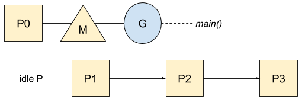

Go: Goroutine, OS 线程及 CPU 管理
ℹ️ 本文基于 Go 1.13
对于一个程序来说，从内存和性能角度讲创建一个 OS 线程或切换线程花费巨大。Go 志在极尽所能地充分利用内核资源。从第一天开始，它就是为并发而生的。
M, P, G 编排
为了解决这个问题，Go 有它自己的在线程间调度协程的调度器。这个调度器定义了三个主要概念，如源码中解释的这样：
The main concepts are:
G - goroutine.
M - worker thread, or machine.
P - processor, a resource that is required to execute Go code.
M must have an associated P to execute Go code[...].
P, M, G 模型图解：

每个协程（G）运行在与一个逻辑 CPU（P）相关联的 OS 线程（M）上。我们一起通过一个简单的示例来看 Go 是怎么管理他们的：
func main() {
var wg sync.WaitGroup
wg.Add(2)
Go func() {
println(`hello`)
wg.Done()
}()
Go func() {
println(`world`)
wg.Done()
}()
wg.Wait()
}
首先，Go 根据机器逻辑 CPU 的个数来创建不同的 P，并且把它们保存在一个空闲 P 的 list 里。

然后，为了更好地工作新创建的已经准备好的协程会唤醒一个 P。这个 P 通过与之相关联的 OS 线程来创建一个 M：

然而，像 P 那样，系统调用返回的甚至被 gc 强行停止的空闲的 M — 比如没有协程在等待运行 — 也会被加到一个空闲 list：

在程序启动阶段，Go 就已经创建了一些 OS 线程并与 M 想关联了。在我们的例子中，打印 hello 的第一个协程会使用主协程，第二个会从这个空闲 list 中获取一个 M 和 P：

现在我们已经掌握了协程和线程管理的基本要义，来一起看看什么情形下 Go 会用比 P 多的 M，在系统调用时怎么管理协程。
系统调用
Go 会优化系统调用 — 无论阻塞与否 — 通过运行时封装他们。封装的那一层会把 P 和线程 M 分离，并且可以让另一个线程在它上面运行。我们拿文件读取举例：
func main() {
buf := make([]byte, 0, 2)
fd, _ := os.Open("number.txt")
fd.Read(buf)
fd.Close()
println(string(buf)) // 42
}
文件读取的流程如下：

P0 现在在空闲 list 中，有可能被唤醒。当系统调用 exit 时，Go 会遵守下面的规则，直到有一个命中了。
- 尝试去捕获相同的
P，在我们的例子中就是P0，然后 resume 执行过程 - 尝试从空闲 list 中捕获一个
P，然后 resume 执行过程 - 把协程放到全局队列里，把与之相关联的
M放回空闲 list 去
然而，在像 http 请求等 non-blocking I/O 情形下，Go 在资源没有准备好时也会处理请求。在这种情形下，第一个系统调用 — 遵循上述流程图 — 由于资源还没有准备好所以不会成功，（这样就）迫使 Go 使用 network poller 并使协程停驻。请看示例：
func main() {
http.Get(`https://httpstat.us/200`)
}
当第一个系统调用完成且显式地声明了资源还没有准备好，协程会在 network poller 通知它资源准备就绪之前一直处于停驻状态。在这种情形下，线程 M 不会阻塞：

在 Go 调度器在等待信息时协程会再次运行。调度器在获取到等待的信息后会询问 network poller 是否有协程在等待被运行。

如果多个协程都准备好了，只有一个会被运行，其他的会被加到全局的可运行队列中，以备后续的调度。
OS 线程方面的限制
在系统调用中，Go 不会限制可阻塞的 OS 线程数，源码中有解释：
The GOMAXPROCS variable limits the number of operating system threads that can execute user-level Go code simultaneously. There is no limit to the number of threads that can be blocked in system calls on behalf of Go code; those do not count against the GOMAXPROCS limit. This package’s GOMAXPROCS function queries and changes the limit.
译注：GOMAXPROCS 变量表示可同时运行用户级 Go 代码的操作系统线程的最大数量。系统调用中可被阻塞的最大线程数并没有限制；可被阻塞的线程数对 GOMAXPROCS 没有影响。这个包的 GOMAXPROCS 函数查询和修改这个最大数限制。
对这种情形举例：
func main() {
var wg sync.WaitGroup
for i := 0;i < 100 ;i++ {
wg.Add(1)
Go func() {
http.Get(`https://httpstat.us/200?sleep=10000`)
wg.Done()
}()
}
wg.Wait()
}
利用追踪工具得到的线程数如下：

由于 Go 优化了线程使用，所以当协程阻塞时，它仍可复用，这就解释了为什么图中的数跟示例代码循环中的数不一致。